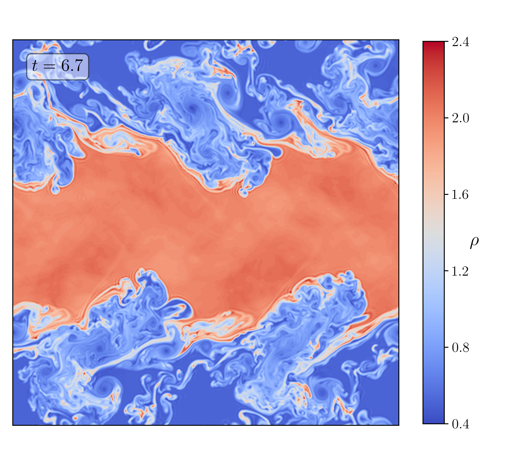

Volume Dissipation for SBP Methods
For decades, numerical dissipation was employed in computational fluid dynamics primarily as a mechanism to stabilize a simulation. Following the development of entropy-stable schemes however, one can now develop provably robust methods without the inclusion of any numerical dissipation at all! Conventional wisdom may then lead one to assume that less volume dissipation leads to a more accurate numerical scheme. In this project we show the contrary, that even for provably nonlinearly stable schemes, the inclusion of volume dissipation can be beneficial for a variety of reasons, including the damping of unresolved modes, the damping of unphysical Jacobian eigenvalues, and assisting in positivity preservation. We construct volume dissipation operators compatible with a wide variety of SBP schemes, and discuss connections to upwind (flux-vector splitting) schemes.
